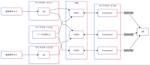

スタディサプリ Product Team Blog
https://blog.studysapuri.jp/
株式会社リクルートが開発するスタディサプリのプロダクトチームのブログです
フィード
スタディサプリの開発運用を支える GitHub Actions
スタディサプリ Product Team Blog
こんにちは。SRE の @int128 です。 スタディサプリのプロダクト開発では GitHub Actions を積極的に導入しています。本稿では、日常の風景に溶け込んでいる GitHub Actions を紹介します。 プロダクトの開発運用を支える GitHub Actions リポジトリとオーナーシップ 我々は monorepo を採用しており、すべてのマイクロサービスを同じリポジトリで管理しています。リポジトリのディレクトリ構成は下図のようになっています。 . ├── .github/workflows/ │ ├── マイクロサービス--test.yaml │ ├── マイクロサービス…
8時間前
年末だし大掃除しよう！AWSコスト削減術ご紹介 1
1
スタディサプリ Product Team Blog
こんにちは！@_a0iです！ この記事はスタディサプリProduct Team Advent Calendar 2024 9日目の記事です！ スタディサプリProduct Team - Qiita Advent Calendar 2024 - Qiita 年末といえば大掃除、大掃除といえばコスト削減！ということで私たちスタディサプリ小中高のSRE主導で行ったAWSコスト削減術を6つご紹介します。 コスト削減術① 付与可能な全てのリソースにタグをつける AWSのコスト削減に大いに役立つツールの1つが「Cost Explorer」です。しかし、Cost Explorerを活用しようとしても、リソー…
2日前
エンゲージメントサーベイによる組織改善 1
スタディサプリ Product Team Blog
こんにちは。スタディサプリの開発グループでマネージャーをしている @ttokutake です。 本稿は スタディサプリProduct Team Advent Calendar 2024 8日目の記事です。 今回はエンゲージメントサーベイの実施と振り返りをして自分のチームの問題点の発見・解決をした事例を紹介しようと思います。 エンゲージメントサーベイとは # 自分 エンゲージメントサーベイとはなんでしょうか？簡潔に教えてください。 # Microsoft Copilot エンゲージメントサーベイとは、従業員の仕事に対する満足度や意欲、会社へのコミットメントを測定するためのアンケート調査です。これ…
3日前
Jetpack Compose の Canvas でお絵描き機能を実装する
スタディサプリ Product Team Blog
こんにちは、Androidエンジニアの@morux2です。スタディサプリ小学講座には、子どもがお絵描きツールで保護者とコミュニケーションを取れる「きょうもできた！」機能があります。本記事では、この機能の実装詳細をご紹介できればと思います。 「きょうもできた！」機能 完成形 「きょうもできた！」機能では、1日の学習のサマリ表示の上に、ペンとスタンプを使ってお絵描きをすることができます。 ペン : 色と太さを選択し、フリーハンドで絵を描くことができる スタンプ : 選択したスタンプを、タップで配置することができる また、次のような操作ができます。 ペンとスタンプの操作を切り替える 1つ戻る 全部消…
3日前
VimConf 2024 に参加してきました (Quickfix編) 1
スタディサプリ Product Team Blog
先日の VimConf 2024 のスポンサーになりました 記事にあるように、株式会社リクルートは、VimConf 2024 という世界最大の Vim の国際カンファレンスのスポンサーになり、何名かが VimConf に参加してきました。 (過去には Vim初心者に贈る、Vimの各種モードを完全に理解するとっておきの方法 にあるように、社員から登壇者も出ています) VimConf 2024について語ることは膨大な量があるのですが、スタディサプリProduct Team Advent Calendar 2024 の6日目の記事である本ページでは、VimConf 2024のうち daisuzuさん…
4日前
KubernetesのNode管理を楽にしたい〜EKS on Fargateの落とし穴紹介〜
スタディサプリ Product Team Blog
こんにちは！スタディサプリ小中高SREの@_a0iです。 この記事はスタディサプリProduct Team Advent Calendar 2024一日目の記事です！ 私たちはここ数年KubernetesのNode管理を楽に・効率的に行おうとKarpenterの導入に励んできました。 Karpenter導入時のトラブルに関するブログを書いてから1年、 blog.studysapuri.jp 私たちは「Amazon EKS on AWS Fargate（以降EKS on Fargate）」の導入を試みることでさらにNode管理を楽にすることをめざしました。 ようやく本番環境で安定稼働してきました…
5日前

宿題配信基盤の移行の旅がはじまりました！
スタディサプリ Product Team Blog
はじめまして、webエンジニアの@shushutochakoと@yoh-shimizuです。普段はスタディサプリ学校向けの事業でwebフロント&サーバサイドの開発をしています。 学校向けの事業では『スタディサプリ for TEACHERS』と言う先生向けのプロダクトがあり、先生が生徒に宿題を配信する機能があります。 宿題配信機能はサービスの中でも核となる機能で、多い月では数万件以上の宿題が配信されます。 サービスの中で重要な機能であるため、その基盤の安定性は極めて重要です。配信処理が不安定である場合に重大なインシデントが発生するリスクがあるため、日々改善に向けた取り組みが求められます。 既存の…
6日前
source maps を守る話 1
スタディサプリ Product Team Blog
こんにちは。スタディサプリの小中新規開発チームで Web エンジニアをしている @YutaUra です。 昨今の JavaScript を利用する開発では source maps の存在が欠かせません。今回の記事では、私たちが直面した source maps が壊れてしまう場面と、 source maps を壊さないために取り組んでいることについて話したいと思います。 source maps とは source maps に関しては web.dev の What are source maps? がとてもわかりやすいと思います。 簡単に説明をすると、 JavaScript(TypeScript…
7日前

GitHub Copilot の Usage API を叩いてみた結果を味わう
スタディサプリ Product Team Blog
本稿は スタディサプリProduct Team Advent Calendar 2024 2日目の記事です。 スタディサプリでソフトウェアエンジニアやエンジニアリングマネージャをやっている @pankona です。GitHub Copilot Usage API を味わってみた話をします。 GitHub Copilot は便利と評判ではある スタディサプリでは GitHub Copilot for Business を使っています。今年のはじめには以下のような記事も投稿しました。 blog.studysapuri.jp 先の記事を投稿したのが2024年1月22日のことだったようです。それ以前か…
9日前
GitHub Actions の異なる Workflow 間で Artifact をやり取りする方法
スタディサプリ Product Team Blog
はじめに こんにちは！ 私は教育支援小中高プロダクト開発部に所属し、スタディサプリの小中学生向けサービスの開発・運用を担当しています。 今回は、GitHub Actions で異なる Workflow 間で Artifact をやり取りする方法について解説します。 業務の中で、異なる Workflow 間での Artifact のやり取りが必要な場面があり、少々手間がかかりました。 Artifact とは？ まず、Artifact とは GitHub Actions における実行結果のファイルやデータのことを指します。 Workflow が実行されると、生成されたビルド結果やテストレポート、ロ…
10日前
社内サーベイを効果的に実施するためのポイント
スタディサプリ Product Team Blog
こんにちは。スタディサプリの認証チームに所属している @taki-21 です。 今回は社内サーベイを効果的に実施するためのポイントについて紹介したいと思います。 はじめに 私たちのチームは 2024 年 4 月から 9 月までの 6 ヶ月間を通して他チームとスムーズな連携を図るために、社内でのプレゼンスを向上させる取り組みを行ってきました。 今回はその取り組みの中の一つであるサーベイに焦点を当てて「サーベイを効果的に実施するためのポイント」についてお伝えしたいと思います。 先に結論を書くと今回の取り組みを踏まえて以下の点について気をつけると効果的なサーベイになるのではないかと思っています。 サ…
20日前
GitHub Actions で Working out Loud を効率化しよう！
スタディサプリ Product Team Blog
面倒で冗長な Working out Loud 周辺作業を GitHub Actions で効率化した話です。簡単な実装なので皆さんのチームでも是非取り入れてみて下さい！
1ヶ月前
DroidKaigi 2024 で GraphQL クライアント実装について登壇しました
スタディサプリ Product Team Blog
こんにちは、Androidエンジニアの@morux2です。先日 DroidKaigi2024 にて、「GraphQLの魅力を引き出すAndroidクライアント実装」という発表を行いましたので、その報告をさせていただきます。 2024.droidkaigi.jp 発表資料はこちらになります。 speakerdeck.com 早速アーカイブも公開していただいておりますので、ぜひご覧ください。 www.youtube.com 発表内容のサマリ スタディサプリ小学講座・中学講座で GraphQL を全面採用し、2年ほど運用した中で蓄積された ADR (Architecture Decision Rec…
3ヶ月前
MagicPod で効率アップ！Android アプリの E2E テスト自動化
スタディサプリ Product Team Blog
こんにちは、Android エンジニアの @myamamic です。スタディサプリ小中講座の Android アプリ開発を担当しています。 この記事では私たちが実施している E2E テストについて、実施の目的や自動化によって受けている恩恵、E2E テストをどのように運用しているかを紹介します。 はじめに: E2E テストの目的 E2E テストケースの観点 E2E テストの自動化 MagicPod について E2E テストの運用: ケースの作成や修正 E2E テストの運用: MagicPod 一括実行のスケジューリング まとめ: E2E テスト自動化によって得られた恩恵 不具合の早期発見 アプリ…
3ヶ月前
VimConf 2024 のスポンサーになりました
スタディサプリ Product Team Blog
こんにちは。thinca です。 このたび株式会社リクルートは、VimConf 2024 のブロンズスポンサーになりました。 私は VimConf 2024 にスタッフとしても関わっています。今回は VimConf についてや、スポンサーすることの意義について、スタッフ側の視点から書いていこうと思います。 VimConf とは 公式サイトから引用すると「VimConf は、世界初かつ世界で唯一のコミュニティによって定期運営されているVimの国際カンファレンス」です。 2013 年に始まり、コロナの期間中はお休みしていましたが、今回で 9 回目になります。 毎年海外から Vim に関わる著名人を…
3ヶ月前
スタディサプリ開発メンバーでSoftware DesignのGraphQL特集を執筆しました！
スタディサプリ Product Team Blog
はじめに こんにちは。スタディサプリでプロダクトプラットフォームの開発を行っている @highwide です。 この度、スタディサプリの開発メンバーで技術評論社様の「Software Design 2024年9月号」の第一特集「実例から学ぶ！GraphQLでアプリケーション開発 現場における使いこなし方を徹底チェック」を執筆しましたので、紹介させていただきます。 gihyo.jp 記事の内容について 全5章の構成で、下記のような章立てとなっています。 第1章「GraphQLとは - 利点・注意点を整理して輪郭をつかむ」(@ywada526) 第2章「GraphQL導入 - クエリを書いてデータ…
4ヶ月前
「現場で実践！RAG活用術 Lunch LT ― 運用して分かった"つらみ"とその対策」で登壇してきました＆質問の回答 #RAG_Findy
スタディサプリ Product Team Blog
こんにちは。@chaspyです。 先日こちらのイベントで登壇してきました。 findy.connpass.com 発表資料はこちらです。 概要については以下の @aoi1 さんの以下のブログも参照ください。 blog.studysapuri.jp 内容は資料を見ていただきたいですが、ポイントとしては以下になります。 基本的には検索システムと捉えている AI Search がクエリの生成と検索結果から回答生成を行っている そのため、E2E で評価しないと実際のアプリと同様の回答が得られない 若干高コストにはなるが、E2E で簡易的はリグレッションテストを行っている とにかく素早くフィードバックサ…
5ヶ月前
FigmaのCode ConnectとCode Generation APIを導入しました
スタディサプリ Product Team Blog
はじめに スタディサプリ小学・中学講座を開発している Android エンジニアの @maxfie1d です。 スタディサプリ小学・中学講座ではデザイナーがFigmaで作成したデザインデータをもとにエンジニアがUIのコードを書いています。 UIのコードを書くことはとてもクリエイティブで楽しい作業ですが、一方でUIにたくさんあるプロパティを読み取りながらコードに反映するのはそれなりに時間がかかり面倒でもあります。 この面倒な「デザインからコードを起こす作業」を効率化できないかどうかを考え、Figma の Code Connect と Code Generation APIを導入したのでご紹介しま…
5ヶ月前
QAチームが行う非機能の試験〜障害許容性試験〜 Non-functional testing conducted by QA team - Fault tolerance testing -
スタディサプリ Product Team Blog
非機能試験についての概要と、障害許容性試験について詳しく説明しています。
5ヶ月前
GitHub Actionsを利用したE2E自動化テストの実現 ～ Achieving E2E Automated Testing with GitHub Actions ～ 利用GitHub Actions实现E2E自动化测试
スタディサプリ Product Team Blog
こんにちは。スタディサプリのQAチームです。 今回のBlogではスタディサプリで実施している自動化テストの一部の取り組みについて紹介させていただきます。 なお、スタディサプリQAチームの特性を活かし、本記事については日英中３言語で記載します。より多くのオーディエンスに読んで頂ければ嬉しいです。 自動化する動機 まず、なぜ自動化テストを導入するのでしょうか。 1. 新規機能が追加される度に、既存機能への影響を確認するための回帰テストをしなければなりません。 2. 繰り返し同じテストを手動実行することにより、テストコストが増加します。 3. 人間が実施すると、人為的ミスによる不具合の検出漏れが発生…
5ヶ月前
RAGを使って社内のGitHubリポジトリに散らばっているドキュメントを自然言語で検索できるSlack botを作りました
スタディサプリ Product Team Blog
RAGを使った社内ドキュメント検索Botの構築 こんにちは！スタディサプリのSREをしている@_a0iです。みなさん、生成AI使っていますか〜！？ ChatGPT, Graffer AI Studio, Microsoft Copilotなど企業で使える生成AIはさまざまだと思います。 しかし、仕事で生成AIを使う際にこれらでは物足りないと思うことはありませんか？一般的な回答ではなく、仕事に特化した回答を生成してほしい、そう思ったことはないでしょうか。 今回Retrieval-Augmented Generation(通称RAG)を使って社内のドキュメントを自然言語で検索できるSlack bo…
5ヶ月前
スタディサプリ小中高における AI 活用の現在
スタディサプリ Product Team Blog
こんにちは。@chaspy です。スタディサプリ小中高の開発部長をしています。 AI の変化の勢いは凄まじいですよね。この1年で随分環境が変わったように思います。本記事では私たちが AI をどのように活用してきたか、これからどう活用しようとしているかについてお伝えします。 なぜ AI に組織として取り組むのか AI 活用ワーキンググループ AIプロジェクトの具体例 業務生産性向上の取り組み Slack AI bot (#ask-chatgpt-ja) 動画の文字起こし & 会議議事録生成 社内情報を用いた問い合わせbot Prompt Engineering 勉強会 ChatGPT Enter…
6ヶ月前
Flutterによるネイティブアプリのリプレースプロジェクトを完遂しました
スタディサプリ Product Team Blog
こんにちは、モバイルアプリエンジニアの @mtbhiro です。現在はスタディサプリ for SCHOOL(以下 forSCHOOL )1というプロダクトのモバイルアプリ開発を行っています。 Flutter による forSCHOOL アプリのフルリプレースプロジェクトを、2023年8月に Android アプリを、2023年12月に iOS アプリをリリースすることで完遂しました！ この記事ではどのような背景や目的でリプレースを行うことになったのか、どのようなプロジェクト管理を試みたのか、そして最終的にどのような結果が得られたのかについて紹介します。 forSCHOOL アプリについて 開発…
6ヶ月前
GraphQL Trusted Documents の実装パターンを Signed Query に移行しました (Android編)
スタディサプリ Product Team Blog
こんにちは、Androidエンジニアの@morux2です。スタディサプリ小学・中学講座ではデータ通信にGraphQLを採用しており、開発者が信頼したクエリのみを処理する仕組みとしてTrusted Documentsを実装しています。この度、従来のPersisted QueryからSigned Queryという新しいTrusted Documentsの実装パターンに移行したので、Android側の実装についてご紹介できればと思います。 Signed Query の詳細な説明は以下のブログをご覧ください。 blog.studysapuri.jp 前提 移行の背景 従来のPersisted Quer…
6ヶ月前
dep-doctor による archived / not-maintained な依存ライブラリ検出の仕組み
スタディサプリ Product Team Blog
こんにちは。@chaspyです。技術戦略グループのマネージャをしています。 本記事では dep-doctorという依存ライブラリのメンテナンス状態をチェックするツールを活用した事例を紹介します。 依存ライブラリのメンテナンス状態を確認したい スタディサプリ小中高では、言うまでもなく多くの OSS / ライブラリに支えられています。しかし、それらのライブラリがメンテナンスされなくなってしまったとしたら、以下のリスクが存在します。 セキュリティ: 既知の脆弱性が修正されない可能性があります。新たに発見された脆弱性に対して、パッチが提供されないため、プロジェクトがセキュリティ上の危険にさらされる可能…
8ヶ月前
スタディサプリ中学講座で市区町村データの更新を行いました
スタディサプリ Product Team Blog
こんにちは。教育支援小中高プロダクト開発部の @mtgto です。スタディサプリで小中学生向けサービスのバックエンド開発を担当しています。 今回は業務上で行った市区町村のデータの更新作業でわかった市区町村の再編処理について紹介します。 スタディサプリ中学講座では、利用者が通っている中学校で利用されている教科書を選ぶことで教科書に対応した定期テスト厳選予想問題が利用できるサービスを提供しています。 https://studysapuri.jp/course/junior/ 利用者が通っている中学校を都道府県と市区町村で絞り込める情報をデータベースに記録しておくことでスムーズに中学校が選択できるよ…
8ヶ月前
Signed Query は GraphQL の Trusted Document の新しい実装パターンです
スタディサプリ Product Team Blog
こんにちは。スタディサプリの小中新規開発チームで Web エンジニアをしている @YutaUra です。 去年の４月に新卒で入社をしまして約 1 年が経ちました。インターン生時代にもブログを書いているのでご興味あれば合わせてご覧ください。 GraphQL と Persisted Query スタディサプリ小中講座ではデータ通信に GraphQL を採用しています。 GraphQL を利用することで、クライアントはスキーマに定義された範囲で自由にデータを取得することができます。 query GetUser { user { name age } } また、 GraphQL はデータのグラフ構造に…
8ヶ月前
鼻をきかせろ！エンジニアバックグラウンドのないTPMが出せる価値について
スタディサプリ Product Team Blog
こんにちは、スタディサプリTPM(Technical Product Manager) *1 の nozomikajimoto です。 突然ですが、私はエンジニアのバックグラウンドがありません。スタディサプリのTPMはエンジニア経験のあるメンバーがほとんどなので、少し変わったタイプだと自負しています。とはいえ、エンジニアバックグラウンドがなくとも、TPMとして価値を出せています。 本稿では、エンジニアバックグラウンドがないTPMが発揮できるバリューと課題、その課題を解決する方法について綴ります。 今後のキャリアとしてTPM(ないしPdM)を考えている方の参考になれば幸いです。 今までのキャリア…
8ヶ月前
Amazon アプリストアでスタディサプリ小学・中学講座を公開するまで
スタディサプリ Product Team Blog
スタディサプリ小学・中学講座を開発している Android エンジニアの @maxfie1d と @omtians9425 です。 2024年2月26日にスタディサプリ小学・中学講座をAmazonアプリストアにて配信を開始致しました。 すなわち今後は Fire タブレット においてもスタディサプリ小学・中学講座をお使いいただくことができます！本記事では Amazon アプリストアでの配信にあたり必要な開発や Tips についてお届けします。 学習を始める方におすすめの端末をご紹介｜スタディサプリ Fire タブレット、Amazon アプリストアとは Fire タブレットは Amazon から発…
8ヶ月前
スタディサプリ最大のRailsアプリケーションにYJIT+pitchforkを導入してメモリ使用量を劇的に削減するまで
スタディサプリ Product Team Blog
こんにちは。SREのkyontanです。Rubyが大好きなのでRubyの話をします。ちなみにリクルートはRubyKaigi 2024へGold Sponsorとして協賛しています! *1。ぜひ沖縄でお会いしましょう。 これはあるアプリケーションのメモリ消費量を示すグラフなのですが、まさかgemを入れ替えるだけでこんなに嬉しい変化が見られるとは思っていませんでした。今日はそんなgemの話をします。 話は遡って2023年4月のある日、インターネットを眺めていたところ、ShopifyがpitchforkというOSSを公開したという情報が目に留まりました。 調べてみると、どうやら著名なRackサーバー…
8ヶ月前